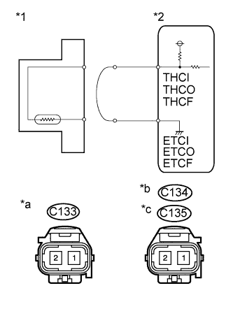
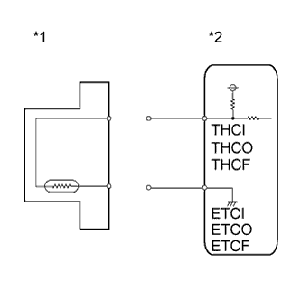

DTC P0545 Низкий уровень сигнала в цепи датчика температуры отработавших газов (датчик 1 ряда 1) |
DTC P0546 Высокий уровень сигнала в цепи датчика температуры отработавших газов (датчик 1 ряда 1) |
DTC P2032 Низкий уровень сигнала в цепи датчика температуры отработавших газов (датчик 2 ряда 1) |
DTC P2033 Высокий уровень сигнала в цепи датчика температуры отработавших газов (датчик 2 ряда 1) |
DTC P242C Низкий уровень сигнала в цепи датчика температуры отработавших газов (для датчика 3 ряда 1) |
DTC P242D Высокий уровень сигнала в цепи датчика температуры отработавших газов (для датчика 3 ряда 1) |
| Режим поездки при обнаружении DTC | Условие обнаружения DTC | Неисправный участок |
| Дайте двигателю поработать на холостом ходу в течение 3 с после его прогрева (температура охлаждающей жидкости двигателя должна быть не ниже 60°C (140°F)) и по истечении 11 минут после его запуска. | При выполнении всех условий выходное напряжение датчика температуры отработавших газов (B1S1) в течение 3 с или дольше оказывается меньше 0,2 В. (логика диагностирования за 1 поездку)
|
|
| Режим поездки при обнаружении DTC | Условие обнаружения DTC | Неисправный участок |
| Дайте двигателю поработать на холостом ходу в течение 3 с после его прогрева (температура охлаждающей жидкости двигателя должна быть не ниже 60°C (140°F)) и по истечении 11 минут после его запуска. | При выполнении всех условий выходное напряжение датчика температуры отработавших газов (B1S1) в течение 3 с или дольше оказывается больше 4,95 В. (логика диагностирования за 1 поездку)
|
|
| Режим поездки при обнаружении DTC | Условие обнаружения DTC | Неисправный участок |
| Дайте двигателю поработать на холостом ходу в течение 3 с после его прогрева (температура охлаждающей жидкости двигателя должна быть не ниже 60°C (140°F)) и по истечении 11 минут после его запуска. | При выполнении всех условий выходное напряжение датчика температуры отработавших газов № 2 (B1S2) в течение 3 с или дольше оказывается меньше 0,2 В. (логика диагностирования за 1 поездку)
|
|
| Режим поездки при обнаружении DTC | Условие обнаружения DTC | Неисправный участок |
| Дайте двигателю поработать на холостом ходу в течение 3 с после его прогрева (температура охлаждающей жидкости двигателя должна быть не ниже 60°C (140°F)) и по истечении 11 минут после его запуска. | При выполнении всех условий выходное напряжение датчика температуры отработавших газов № 2 (B1S2) в течение 3 с или дольше оказывается больше 4,95 В. (логика диагностирования за 1 поездку)
|
|
| Режим поездки при обнаружении DTC | Условие обнаружения DTC | Неисправный участок |
| Дайте двигателю поработать на холостом ходу в течение 3 с после его прогрева (температура охлаждающей жидкости двигателя должна быть не ниже 60°C (140°F)) и по истечении 11 минут после его запуска. | При выполнении всех условий выходное напряжение датчика температуры отработавших газов № 3 (B1S3) в течение 3 с или дольше оказывается меньше 0,2 В. (логика диагностирования за 1 поездку)
|
|
| Режим поездки при обнаружении DTC | Условие обнаружения DTC | Неисправный участок |
| Дайте двигателю поработать на холостом ходу в течение 3 с после его прогрева (температура охлаждающей жидкости двигателя должна быть не ниже 60°C (140°F)) и по истечении 11 минут после его запуска. | При выполнении всех условий выходное напряжение датчика температуры отработавших газов № 3 (B1S3) в течение 3 с или дольше оказывается больше 4,95 В. (логика диагностирования за 1 поездку)
|
|
| № DTC | Параметры из Data List |
| P0545 | Exhaust Temperature B1S1 |
| P0546 | |
| P2032 | Exhaust Temperature B1S2 |
| P2033 | |
| P242C | Exhaust Temperature B1S3 |
| P242D |
| Условие | Температура отработавших газов | Состояние датчика температуры отработавших газов |
| Холостой ход после прогрева двигателя | Постоянное значение в диапазоне 50-700°C (122-1292°F) | Нормальное состояние |
| 0°C (32°F) | Обрыв цепи | |
| 1000°C (1832°F) | Короткое замыкание |
| 1.СНИМИТЕ ПОКАЗАНИЯ ПОРТАТИВНОГО ДИАГНОСТИЧЕСКОГО ПРИБОРА (ДЛЯ ТЕМПЕРАТУРЫ ОТРАБОТАВШИХ ГАЗОВ) |
Подсоедините портативный диагностический прибор к DLC3.
Включите зажигание (IG) и портативный диагностический прибор.
Войдите в следующие меню: Powertrain / Engine and ECT / Data List / Exhaust Temperature B1S1, Exhaust Temperature B1S2 и Exhaust Temperature B1S3.
Снимите показания.
| Отображаемая температура | Следующий шаг |
| 0°C (32°F) (после прогрева двигателя) | А |
| 1000°C (1832°F) | B |
| ОК: Соответствует действительной температуре отработавших газов (50-700°C (122-1292°F) во время работы двигателя на холостом ходу после прогрева) и изменяется после работы двигателя в течение 1 мин с постоянной частотой вращения коленчатого вала, равной 3000 об/мин при условии, что частота вращения коленчатого вала двигателя была увеличена с частоты холостого хода до 3000 об/мин. | C |
|
| ||||
|
| ||||
| А | |
| 2.СНИМИТЕ ПОКАЗАНИЯ ПОРТАТИВНОГО ДИАГНОСТИЧЕСКОГО ПРИБОРА (ПРОВЕРЬТЕ, НЕТ ЛИ ОБРЫВА В ЖГУТЕ ПРОВОДОВ) |
|  |
Отсоедините разъем C133, C134 или C135 датчика температуры отработавших газов.
Соедините контакты 1 и 2 разъема датчика температуры отработавших газов со стороны жгута проводов.
Подсоедините портативный диагностический прибор к DLC3.
Включите зажигание (IG) и портативный диагностический прибор.
Войдите в следующие меню: Powertrain / Engine and ECT / Data List / Exhaust Temperature B1S1, Exhaust Temperature B1S2 и Exhaust Temperature B1S3.
Снимите показания.
| *1 | Датчик температуры отработавших газов |
| *2 | ECM |
| *a | Вид спереди разъема со стороны жгута проводов: (к датчику температуры отработавших газов № 2 (B1S2)) |
| *b | Вид спереди разъема со стороны жгута проводов: (к датчику температуры отработавших газов № 3 (B1S3)) |
| *c | Вид спереди разъема со стороны жгута проводов: (к датчику температуры отработавших газов (B1S1)) |
Подсоедините разъем датчика температуры отработавших газов.
|
| ||||
| OK | |
| 3.ЗАМЕНИТЕ ДАТЧИК ТЕМПЕРАТУРЫ ОТРАБОТАВШИХ ГАЗОВ |
Замените датчик температуры отработавших газов (Нажмите здесь).
|
| ||||
| 4.ПРОВЕРЬТЕ ЖГУТ ПРОВОДОВ И РАЗЪЕМ (ДАТЧИК ТЕМПЕРАТУРЫ ОТРАБОТАВШИХ ГАЗОВ - ЕСМ) |
Отсоедините разъем датчика температуры отработавших газов.
Отсоедините разъем ЭБУ.
Измерьте сопротивление в соответствии со значениями, приведенными в таблице ниже.
| Контакты для подключения диагностического прибора | Состояние | Заданные условия |
| C133-1 - C92-5 (THCI) | Всегда | Менее 1 Ом |
| C133-2 - C92-11 (ETCI) | Всегда | Менее 1 Ом |
| C134-1 - C91-1 (THCO) | Всегда | Менее 1 Ом |
| C134-2 - C91-2 (ETCO) | Всегда | Менее 1 Ом |
| C135-1 - C92-17 (THCF) | Всегда | Менее 1 Ом |
| C135-2 - C92-16 (ETCF) | Всегда | Менее 1 Ом |
Подсоедините разъем датчика температуры отработавших газов.
Подсоедините разъем ECM.
|
| ||||
| OK | |
| 5.ЗАМЕНИТЕ ECM |
Замените ECM (Нажмите здесь).
|
| ||||
| 6.СНИМИТЕ ПОКАЗАНИЯ ПОРТАТИВНОГО ДИАГНОСТИЧЕСКОГО ПРИБОРА (ПРОВЕРЬТЕ, НЕТ ЛИ КОРОТКОГО ЗАМЫКАНИЯ В ЖГУТЕ ПРОВОДОВ) |
|  |
Отсоедините разъем C133, C134 или C135 датчика температуры отработавших газов.
Подсоедините портативный диагностический прибор к DLC3.
Включите зажигание (IG) и портативный диагностический прибор.
Войдите в следующие меню: Powertrain / Engine and ECT / Data List / Exhaust Temperature B1S1, Exhaust Temperature B1S2 и Exhaust Temperature B1S3.
Снимите показания.
Подсоедините разъем датчика температуры отработавших газов.
| *1 | Датчик температуры отработавших газов |
| *2 | ECM |
Подсоедините разъем датчика температуры отработавших газов.
|
| ||||
| OK | |
| 7.ЗАМЕНИТЕ ДАТЧИК ТЕМПЕРАТУРЫ ОТРАБОТАВШИХ ГАЗОВ |
Замените датчик температуры отработавших газов (Нажмите здесь).
|
| ||||
| 8.ПРОВЕРЬТЕ ЖГУТ ПРОВОДОВ И РАЗЪЕМ (ДАТЧИК ТЕМПЕРАТУРЫ ОТРАБОТАВШИХ ГАЗОВ - ЕСМ) |
Отсоедините разъем датчика температуры отработавших газов.
Отсоедините разъем ЭБУ.
Измерьте сопротивление в соответствии со значениями, приведенными в таблице ниже.
| Контакты для подключения диагностического прибора | Состояние | Заданные условия |
| C133-1 или C92-5 (THCI) - масса | Всегда | 10 кОм или более |
| C134-1 или C91-1 (THCO) - масса | Всегда | 10 кОм или более |
| C135-1 или C92-17 (THCF) - масса | Всегда | 10 кОм или более |
Подсоедините разъем датчика температуры отработавших газов.
Подсоедините разъем ECM.
|
| ||||
| OK | |
| 9.ЗАМЕНИТЕ ECM |
Замените ECM (Нажмите здесь).
|
| ||||
| 10.ОТРЕМОНТИРУЙТЕ ИЛИ ЗАМЕНИТЕ ЖГУТ ПРОВОДОВ ИЛИ РАЗЪЕМ |
Отремонтируйте или замените жгут проводов или разъем.
| ДАЛЕЕ | |
| 11.ПРОВЕРЬТЕ, УСТРАНЕНА ЛИ ДОЛЖНЫМ ОБРАЗОМ НЕИСПРАВНОСТЬ |
Подсоедините портативный диагностический прибор к DLC3.
Сбросьте коды DTC (Нажмите здесь).
Запустите двигатель.
Дайте двигателю поработать на холостом ходу в течение не менее 3 с после его прогрева (температура охлаждающей жидкости двигателя должна быть не ниже 60°C (140°F)) и по истечении 11 минут после его запуска.
Войдите в следующие меню: Powertrain / Engine and ECT / DTC.
Убедитесь, что DTC не выводится снова.
| ДАЛЕЕ | ||
| ||